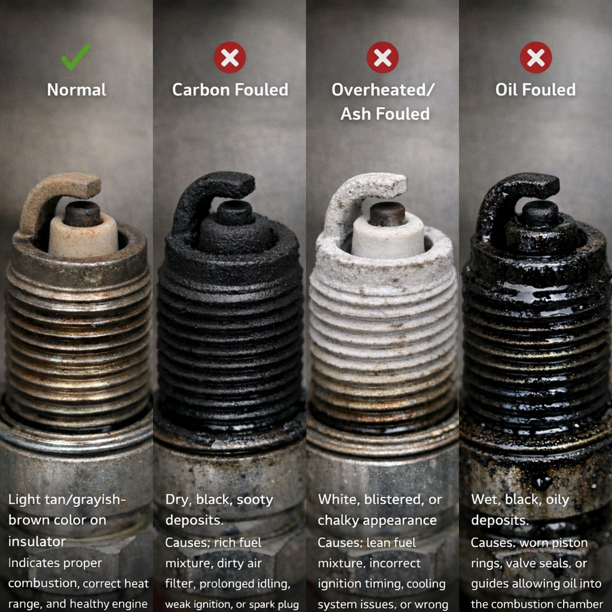
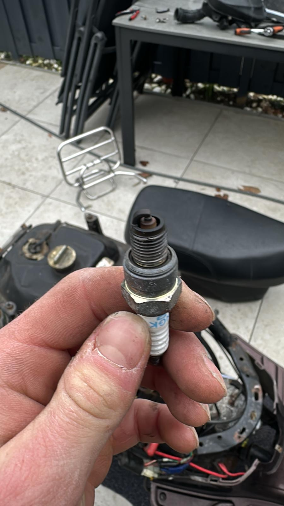

The spark plug is one of the cheapest and most impactful maintenance items on any petrol scooter. A worn or incorrectly gapped plug causes hard starting, rough idle, misfires, and increased fuel consumption. Replacing it takes 10–15 minutes and costs less than €5 for a standard NGK.
Spark Plug Specifications
| Engine | Standard Plug | Upgrade (Iridium) | Gap |
|---|---|---|---|
| GY6 50cc (139QMB) | NGK C7HSA | NGK CR7HIX | 0.6–0.7 mm |
| GY6 125/150cc (157QMJ) | NGK CR7HSA | NGK CR7HIX | 0.6–0.7 mm |
| Vespa Primavera 125 iGet | NGK ILZKBR7B8DG (OEM) | — | 0.7–0.8 mm |
Tools & Materials Required
- Spark plug socket — 16 mm for most GY6 engines (check your cap diameter first)
- Socket wrench extension (the plug is often deep in the head)
- Feeler gauge (to verify the gap on the new plug)
- Torque wrench (optional but recommended — 10–14 Nm)
- Compressed air or a rag to clean the plug recess
- New spark plug (see specifications above)
Reading the Old Plug — What It Tells You
Before discarding the old plug, inspect the electrode. The color and condition reveal a lot about engine health:
| Electrode appearance | Diagnosis | Action |
|---|---|---|
| Light tan/grey, slight electrode wear | ✅ Normal — engine running correctly | Replace at service interval |
| Dry black, sooty carbon deposits | Rich mixture or clogged air filter | Check/clean air filter; check carb jetting |
| Wet/oily, black | Oil in combustion — worn piston rings or valve seals | Engine inspection needed |
| White or pale grey, blistered | Lean mixture or overheating | Check fuel delivery, coolant/air flow |
| Rounded/eroded electrode | Normal wear — replace now | Standard replacement |


Analysis — This Plug
Good signs
- Insulator (ceramic nose) is brownish/tan — correct combustion temperature
- No wet or oily deposits — no oil burning
- No white chalky residue — not running lean or overheating
Minor concerns
- Some dark sooty buildup around the electrode area
- Threads look dirty/carbon-coated
Recommendations: Check the electrode gap with a feeler gauge. Inspect the air filter — a clogged filter often causes this slight richness. You can clean the plug with a wire brush and reuse it, or replace it if it has been in service a long time. A new NGK plug costs under €5 and is cheap insurance.
Step-by-Step Replacement Procedure
- Let the engine cool for at least 10 minutes. Working on a hot engine risks burns and can cause the plug to seize in the aluminium head if torqued incorrectly when hot.
- Remove the spark plug cap by pulling it straight off the plug. Pull the cap, not the wire — pulling the wire can damage the HT lead connection inside the cap.
- Clean around the plug recess with compressed air or a dry rag. Any debris that falls into the cylinder when the plug is removed can score the bore.
- Unscrew the old plug counter-clockwise using the spark plug socket. If it is tight, apply penetrating oil (WD-40 or equivalent) around the base and wait 5 minutes before trying again. Do not force it.
- Inspect and note the condition of the old plug electrode as described in the reading guide above.
- Check the gap on the new plug with a feeler gauge. For GY6 engines, the gap should be 0.6–0.7 mm. Most NGK plugs are pre-gapped but verify. To adjust, carefully bend only the side (ground) electrode — never the centre electrode.
- Thread the new plug in by hand for the first 3–4 turns. Cross-threading an aluminium cylinder head is an expensive mistake. If it does not thread smoothly by hand, stop and recheck alignment.
- Tighten with the socket. With a new plug and a copper washer seat: hand-tight + ¼ turn. With a torque wrench: 10–14 Nm. Do not overtighten — aluminium threads strip easily.
- Reconnect the spark plug cap firmly until it seats fully. A loose cap is a common cause of intermittent misfires.
- Start the engine and confirm it runs cleanly at idle and through the rev range.
Spark Plug Service Intervals
| Plug type | Inspection | Replacement |
|---|---|---|
| Standard copper (NGK C7HSA / CR7HSA) | Every 3,000 km | Every 3,000–5,000 km |
| Iridium (NGK CR7HIX) | Every 5,000 km | Every 10,000–15,000 km |
| Vespa OEM iridium | Per Piaggio service schedule | Every 8,000–10,000 km |
Applicable Models
This procedure applies to all GY6-engined scooters including the BTC Riva, La Souris Sourini / City, Santini Capri, and all other 139QMB / 157QMJ engine family scooters. For Vespa Primavera and Sprint models, the plug location and cap type differ but the procedure is identical — consult your model's service manual for the exact plug recess location.
100 cc: Champion RG4HC / Champion RG4PHP / NGK CR9EB | Gap: 0.7–0.8 mm | Torque: 10–15 Nm
50 cc: NGK CR8EB / Denso U24ESR-NB3 | Gap: 0.7–0.8 mm | Torque: 10–15 Nm
The ZIP uses a hotter plug (CR9EB vs CR7HSA on GY6) due to its SOHC combustion chamber design and compression ratio (10.5–11.5:1). See the Piaggio ZIP 100 Technical Overview for the full maintenance schedule.